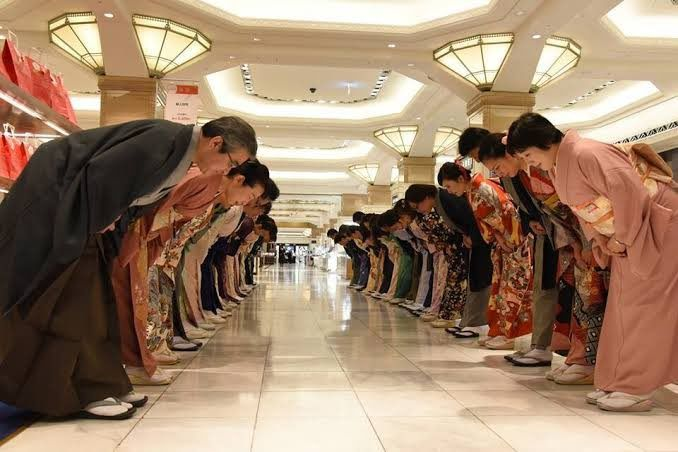

Ojigi (お辞儀) - Tradisi Membungkuk

Ojigi adalah tradisi membungkuk yang digunakan masyarakat Jepang sebagai bentuk salam, rasa hormat, permintaan maaf, maupun ucapan terima kasih. Semakin dalam seseorang membungkuk, semakin besar rasa hormat yang ingin ditunjukkan. Tradisi ini telah menjadi bagian penting dalam kehidupan sehari-hari, baik di sekolah, tempat kerja, maupun dalam pertemuan resmi. Hingga saat ini, ojigi tetap dipraktikkan sebagai salah satu etika yang mencerminkan kesopanan masyarakat Jepang.